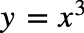

Like I mentioned, I wasn’t equipped to maintain this balance between the
self and situational control for a very long time. In college, I was on a
different continent. I had some childish desires and pent-up frustrations
that I needed to blow-off. I needed to let loose, and
experience what it meant to be truly free.
“Trouble and anguish shall make him afraid;
they shall prevail against him, as a king ready to the battle.”
(Job 15:24)
I wanted to be free from my current societal constructs, the expectations
of what I was supposed to be doing, and most of all – I needed to
get away from this family of mine who I had come to detest. It didn’t help
that over 90% of my high-school class had boycotted me over their childish
insecurities. In my mind, I had packed up and left a life behind, to which
I had no intentions of coming back.
Little did I realise in that moment, that being social creatures that we
are, if I was escaping one model of society, I would have to put more
efforts into adjusting into a different societal model.
And so I did. I altered my entire persona to fit into this new dynamic that I
was now to be a part of.
“And he dwelleth in desolate cities, and in houses which no man
inhabiteth, which are ready to become heaps.”
(Job 15:28)
It is a very famous cliché that ‘change is inevitable – nothing is constant but change.’ It is
true, but the true beauty of human nature is in retaining the essence of what was in the face of what could be. No matter how much circumstances change, how much you change yourself to
adapt according to those circumstances – you still remain You –
changing ever so slightly, yet remaining constant in the midst of
evolution.
I could probably mention many more clichéd examples of changes and true
human essence, but where’s the fun in that? You can look up Hexagram 30 on your own time. Please do so before
proceeding, and let serendipity guide you to a conclusion best suited to your own self.
The general goal, as I mentioned in the previous chapter, is to go with the flow to the best of your abilities, guided by your
intuition. That, you could then call destiny, or just the sum of your
interactions with space, in time – it’s up to you. As was the case
for me at the time – I simply could not have gone with the flow.
I needed an escape from my own world.
Here’s the thing though: before going out, and finding faults in the world
– look inwards and correct yourself. Ask why you are the way you
are. What are the things, the experiences, the people that made you the
person you are today? When you explore all that, and more, and still don’t
manage to find an answer to solve all your life’s problems, then, and only
then choose to blame the world, and ask why the world is the way it is.
Don’t, until then, discount even a single negative habit that you have –
not one negative behaviour you partake in.
Everything matters, and be damn sure – that every action does count.
Put yourself in a position to change your circumstances; and if you want to
change the world – put yourself in a position to bring change into the
world – whether that is your own self-centred bubble of a world,
or the entire human populace as we know it. Don’t be an ignorant protester,
cursing from the bottom of the ladder.
Climb on top of the ladder first, understand what it takes to climb the
ladder, and only then point out the negativities that exist in the system
of climbing that ladder. If for some reason, you cannot climb the ladder,
don’t fault the system before you have had the chance to properly
experience it. You might only have witnessed the hardships of the beginning, but don’t
complain before you have had a chance to taste the fruits of the end. If
there exists a system in the world, it must be because it works. You can
find faults in it for not being perfect, for not being the best
implementation of what it could be – nothing ever will be. You
can’t find faults in it because it has not worked for you so far.
In a similar manner, you can’t find faults in a person whose life you have
not lived – whose hardships you have not experienced. You can’t simply hate
or despise another entity for having a particular opinion, for engaging in
a particular behaviour, and simply interpret their actions from your own
perspective. There are reasons for why people are the way they are and why
they engage in certain behaviours in the way that they do – you will never
truly understand those reasons if you keep looking at things from your point of view.
Therefore, whenever you feel the urge to express hate, or your disposition,
or your disappointment, or any other negative emotion - the first thing to
do is to break down the issue at hand to the tiniest indivisible
components. Then, psychoanalyse those issues ad nauseam.
You could do this with a professional, but it will always help if you know
the theory for yourself. People with domain knowledge are far better at
finding actionable insights than people who only know how to interpret, and have access to the data,
but are working without domain specific expertise. It is always
better if you exist at the intersection of this Venn diagram.
Ask yourself why each component is relevant to the problem at hand, and
locate its source down to the most basic fractal origin. Run
scenarios in your head, explore alternative strategies and formulate a game
plan. When you do this exercise, and if you do it very well, you’ll realise
that the problems really, actually, stem from within your own self and
manifest outward into your own sphere (read: skew apeirohedron. Limitations
of the English language).
While doing this, also
accept that you are only just a human, and as such, have limitations
- in your scope of understanding and execution of said method. Do this,
knowing full well, that you may be wrong.
Nothing you will ever know, or understand, or comprehend, will ever be
truly absolute - an end unto itself
.
Even after you do all that, and the answer to your initial problem comes
from a source seemingly separate from your own self, then, by all
means available to you - channel your negativity into the world.
You will most definitely be proven wrong, correctly so.
Even then, one of the things about humans though, that truly gets to me, is
how easily we pass judgements – on each other, on situations, on any and
all entities that we ever come across. I have often wondered what life
would’ve been like if we just did not have the ability to judge. Seemed
majorly antithetical, given that this is the very evolutionary trait that has kept us on top of the food
chain despite our physical shortcomings.
Maybe then, the problem is not that we judge, but that we judge in absolute, superlative terms. To give you an idea of
the scale at which we mentally operate in our internal fiefdoms, it is as
if, each personal scorn by our tiny selves equals an excommunication within
our own Kingdom of Self. To be the supreme entity in your own internal
world does have a lot of disadvantages.
Some would argue that operating at such a scale was not justified, as it
leads to a puffed up perception of the self, and that it implied deep
narcissistic and ego-maniacal character flaws. I would partly agree with
those people; but that’s not the whole story.
Some would, on the opposite end of the spectrum, argue that if a person had
rightfully earned their place in the world, they had a certain level of entitlement when it came to their mode of operation – that to be
at the place they are in their personal spacetime, and the world at large –
they had to have a certain degree of self-worth, and self-importance which
would, in most cases, be firmly warranted – as without such a high stature
of the internal self, other entities seemingly separate from this self
would not allow this internal self to operate as fluidly as it would like
to. I would agree with those people as well.
This too, leaves a void about the persons who seemingly have no elevated
status to speak of, but also, are not really operating from a place of
narcissistic bravado and puffed up machismo. They are people who have not
truly realised their true selves and have yet to find something in the
world that makes them feel like they have found their place in it – like
they truly belong. There exists in them, a sort of mental divide on where
they truly are in their mental journey, and where they seem to be in the
physical realm.
To be truly rational about this situation, we must recognise the faint
possibility of all things that we do not know, even if we logically find
them extraordinarily improbable. This accord on such a mentally divisive
issue has not come out of the goodness of my heart, or the amicability of
the diplomat in me – rather, careful consideration of facts, and
deliberated judgement.
On the subject of unrealised, and unfulfilled souls, there is another
ego-related pattern that makes me uneasy about reintroducing the concept of
God to the world – that being over-inflated egos in religious people. With
atheists, I find it moderately acceptable when they make
ego-centric decisions, for now (before La Resurrezione – the event, not the sculpture) – because in their
minds, they are always their own saviours.
In a time of prevailing social decadence, there arises in the
collective, a need to switch to Atheism. If you are confused and upset by this statement, then you are still
acting with prejudice. To better understand this statement, we have to once
again, go back to Aristotle. Are you then upset with Atheism, or the status
quo that makes Atheism an obvious way of belief?
In the time that I have been living, there is one defining incident, that,
to me at least, boils down to the root of all religious conflict – just the
fact of how religious fanatics often get offended by satire and
inconsequential joking about anything to do with God and faith. It is as if
they need to protect their God. As if God is so fickle that even a cartoon portrait of his prophet will
offend him, and unleash his wrath on people who stood idly by and did
nothing to stop this “mockery.”
Surely nobody sets out to become a part of this kind of a group. Then how the fuck do we always get here?
“For therein is the righteousness of God revealed from faith to faith:
as it is written, The just shall live by faith.”
(Romans 1:17)
Faith is something that’s supposed to unite us, not divide us. The
definition of faith itself, has never been truly clarified – that in and of
itself, goes to the very root of all the trouble we face in these desperate
times.
Let’s assume that there are two groups. Group A holds
some values and rituals and customs very dear to their heart, since they
connect them in their own way to the Creator. These acts help them feel the
bliss that He so freely gives. Group B
has a different set of rules, rituals and customs that help them connect
with the same Creator in their own way. Group A doesn’t appreciate the
customs of Group B at the level that Group B appreciates them. Similar is
the situation with Group B. When one group doesn’t appreciate something as
much, it is automatically given a lower position than the thing they
appreciate more. This is how the concept of “other” arises. When a group
simply tolerates the “other,” their beliefs can never let them
co-exist peacefully.
Group A and Group B can co-exist with they learn to appreciate their
customs for what they are – just customs. They are both simply different
ways of doing the same things – the knowledge of which were acquired by
learned people of the past from the Creator Himself – and given enough time
– they WILL always need to be updated.
Over time, language changes, political and economic realities change – why
shouldn’t religion? If religion didn’t need an update, then why does God
always send the same soul in different times, and different places, to
preach the same things to the same souls in a way their current selves
understand best?
What faith really is, is the amount of confidence you have in your
interpretation of the scriptures that you have been indoctrinated in ever
since you were a little kid. Your interpretation could then, obviously be
wrong – you are, just a human.
So there you have it, so many millennia have gone by, but the definition of
the very thing that people spend their lives devoted to, and believing in,
had not been properly hashed out. How could it? There never has been a time
such as this, where the entire global ecosystem lived, breathed, and
interacted as one giant whole. Many more such definitions have already, and
will continue to come to light in Scova, if you are really paying attention
that is.
Religious people of my time can’t get themselves to agree on the same
thing, allow for no questioning of existing customs, cover up the horrors
that occur in their organisations, and they engage in these acts much more than devoted attributions to the
Creator, and worst of all – proceed in all mechanicality to perform the
antiquated acts about whose origin and significance, they haven’t the
slightest clue.
And then they concern themselves with the supposedly blasphemous way of
belief in no Creator at all. Their existence is a direct result of the
shortcomings of the religious people to understand the acts they themselves
are engaged in, and were supposed to unwaveringly follow till Kingdom come.
To that end, to the best of my discernment, an atheist chooses to believe
in the existence of no superior governing power, because of two reasons: They have either lost their faith in the overseer because of the corruption of the world – that the world is too damn fucked up to have a guardian; or, that they are filled with Hubris – the blatantly blinding belief that humans are running this
world without any Divine Interventions.
“What most atheists do believe is that although there is only one kind
of stuff in the universe and it is physical, out of this stuff come
minds, beauty, emotions, moral values–in short the full gamut of
phenomena that gives richness to human life.”
(The God Delusion – Page 34, Richard Dawkins)
I share sympathy for the first kind of Atheists, let’s call them Type-1
Atheists. They are the kind I empathise with, personally. They can find
their place in Heaven only if they are shown the workings of God, and how
Science and Progress fit into this worldview – that is, through proper guidance in the proper way.
The second type of Atheists, let’s call them Type-2 Atheists. They will
only believe in God if they see any one of His proxies, in full force.
Nothing else will convince them that there is a higher power at work in
running the world. My mother would label them as ‘meesna’ (you can
Urban Dictionary such small stuff). I say this, because these are the
people without a fully upright spine (astrally).
“Thus saith the LORD to his anointed, to Cyrus,
whose right hand I have holden, to subdue nations before him;
and I will loose the loins of kings,
to open before him the two leaved gates;
and the gates shall not be shut;”
(Isaiah 45:1)
The moment these people get even a glimpse of Divine Intervention, they’ll
get right onto their knees and beg for mercy (even when God hasn’t asked
them to do anything). It will make their chest burn, their bowels loose,
and just the mere presence of the Holy Spirit will throw them off-balance,
make them jittery – unable to sit still, and upright. Even Type-2 people
can be made into firm believers, given the right motivation.
Even still, they are just people, and as such cannot all be
divided into non-intersecting Venn diagrams. There is another division that
I would like to establish: Shaaney: self-willed, but faithless people; and Bholey:
God fearing, judgmental people.
Shaaney people are not mostly not happy because they do not have God to
comfort them. If their conscience spoke to them nonverbally, they would be
made happier if they just started paying attention, and acting on the
advice that it gave them.
Bholey people think that just because they have been good, they are on
God’s good side, that they have some innate authority to judge
people. The ability to judge is only provided for the purposes of
discernment of variables in a situation – to truly be able to judge another
human being, a separate kind of life has to be lived. They are almost
always unhappy because of this very trait.
“For wrath killeth the foolish man, and envy slayeth the silly one.”
(Job 5:2)
Type-2 Atheists are mostly Shaaney, not all Type-2 Atheists are
Shaaney, and not all Shaaney are Type-2. Shaaney people can learn, and be
truly happy, only if they accept that they are equal to everyone else, and
inferior to God and His proxies. It is harder to convince the Shaaney
because they start to compete with said proxies and think that if another
human seeming person can do it, they can do it too. They can, but not quite.
Bholey people can learn to find solace in the misery of life and time, only
if they accept that just following the rituals and commandments blindly and
mechanically does not make them superior to any other being. It is
theoretically easier to convince them because they already consider
themselves inferior to God and His proxies. In reality, however, the
opposite is true of Bholey people – because they love to talk.
In most cases, it’s just purely talk, and nothing more than that. This, in
itself, being the principal possibility with them – because deep down, they
are almost always Type-1 disbelievers. They fear God, sure – they
are shit scared – but they pretend to be holier than thou just to
cover their bases – as if it is at all possible to fool God.
It was thus, the easier, and honestly, before Scova, the most logical choice to be an atheist. Especially when the
“religious” people could not bring themselves together to accept the SAME
truth revealed in different languages, to different people in different
times, using different styles.
For most of my life, I myself have been disenchanted with the idea of God. It is one of
the reasons why I fight so hard for an atheist’s right to disbelief.
In this Godless-cut-throat-every-man-for-himself world, Atheists were left
with not many options, and not many opportunities to be kind to people for
no reason. The weight of their own world was on their shoulders
and they had not had the kind of training I had had to properly shoulder
the responsibilities that come with this weight. As a result, they were almost always irritated with the state of affairs.
They were inflicted with pains they did not understand, and which the
(current) doctors could not explain.
Now why would I state such an absurd thing? I will circle back to this in a
brief moment, but first, I would like to introduce, the majorly important,
but vastly unexplored concept of
Christ Consciousness – the idea that all of us, each and every one of
us, without exception, contains, within ourselves, the potential, the
propensity, and the motivations to actualise the Divine within
ourselves – to be the Sons and Daughters of God in the Kingdom of
Heaven.
I remember, at the beginning of the night when I was to be Born Again – I had no idea what the night would lead to when my
trip started. As my vision started to turn to gold, I kept
muttering “Bhagwaan asli nahi hai” – God is not real. Each time I
uttered that phrase, the Gold started getting swept away from me. It was as
if God’s blanket was trying to protect me, but each time I resisted, it
went further away. God’s blanket here, is a metaphor. The golden vision, is real.
I was nonverbally told the truth about my self in this life on my Judgement
Day, and I didn’t really take it to heart at first. Even though I had just
been through a judgement day, I was still just attributing most of it to my
stupid, fucked up brain.
“If I had called, and he had answered me;
yet would I not believe that he had hearkened unto my voice.”
(Job 9:16)
When the day actually came, I forgot all about the internal dissonance and took a chance anyway. If my mind was trying to tell me something,
albeit in a schizophrenic fashion, I was open to listening because rarely
does the subconscious interact so openly with the conscious self.
It was the night of July 14th, 2017 and the location was Washington Square
Park, New York City. I had walked to the park barefoot, without any form of
identification, without any money – cash or card, and had even left my
phone at home. I had truly just walked out as a nobody. If this was really
God I was talking to, then He would take care of me, I thought.
He did, take care of me, later in the night;
but, life with God, generally, is not easy.
You have to be forever hopeful,
despite the most trying circumstances.
You have to be in a good mood all the time,
for all your worldly affairs to keep working properly.
You have to always wish others well in your own heart,
even when you truly just want to hate them.
You have to continuously consult Him before taking any decision,
and then hope that you have interpreted His wishes properly.
In short, you have to
live out the preachings, and life of Christ in the Gospel to the letter
for it to be in anyway beneficial to you, as it was to Christ at the time.
If you commit wholeheartedly to God’s orders, your soul will live free, but
if you disobey, even the tiniest bit, your body will feel the literal pain.
You are allowed to make mistakes, honest mistakes that is. What you can’t have, is weaknesses. If ever things get tough, and you have a guilty pleasure, a bad habit, a drug you take – forget about them. Somebody you would like to blame for any predicament in life – forget about that too – you’ve only got yourself to blame. Do you hate the people around you? Tough luck. You’re stuck with them. If you leave them forever, in hopes that you will have a better life, you will never truly find what you were looking for.
You have to always live your life as if it were a fantasy, and you
have to act as if you were the protagonist of that fantasy while
acknowledging that all that you are, has come from Him, and all that you
will become, will be because of Him. This is why, you have to always make
sure that whatever internal narrative that you have going on inside your
head – the way you see your life playing out if all things around your were
perfect – had you, your social connections, your financial status, your
intellectual prowess, and whatever else it is that you desire – you really
do have to live that fantasy and act accordingly.
“I returned, and saw under the sun,
that the race is not to the swift,
nor the battle to the strong,
neither yet bread to the wise,
nor yet riches to men of understanding,
nor yet favour to men of skill;
but time and chance happeneth to them all.”
(Ecclesiastes 9:11)
All of us, and I really do mean all, are given multiple chances in our
lifetimes to be in the position that I currently am. I wasn’t kidding when
I said that 'virtue and labour' is the prime holding motto towards spiritual
success. It is also no surprise that this was the school motto of St George's College. You become what you let circumstances make of you. You will see that the more you want to help yourself – the more outside help will come to you – God helps those who help themselves.
“For he that hath, to him shall be given: and he that hath not,
from him shall be taken even that which he hath.”
(Mark 4:25)
So it came to pass that one such opportunity came my way too; and I leaped at the chance. Had I not taken the leap in that moment, I’m
sure I would’ve been given that chance again, but my life wouldn’t have
gone on to play out at the magnitude that it will eventually play out. As
you lose out on those opportunities, less and less of them start coming
your way –
with each successive chance holding less importance in your confine of
influence than the last one.
This verse from the New Testament, actually describes the presentation of opportunities in our
reality. Our reality, being three-dimensional, actually does play out in
the form of a cubic graph, specifically one given by the primitive
equation:

What I mean to say, that the more successful you are, the more
opportunities come your way, because of your previous success – and these
opportunities don’t just increase linearly, they add up exponentially – so
much so that there often comes a point where you can’t possibly attend to
it all. The same applies in the opposite direction – they decrease
exponentially the more unsuccessful you are. This one is a well observed
social pattern, sometimes also referred to as the Matthew Principle.
What I meant, when talking about the cubic nature of opportunity addition,
was that acquisition of Christ Consciousness is not a one time thing –
it is deeply rooted in our internal code, and very well observed in
other spheres of life. That is why even though God is infinitely forgiving, you seem to get hurt
more and more every time you make the same mistake.
Writing this chapter over this week, I have been a little out of place
myself. On one hand, I wish to bring all the people of the world together
under One God, One Faith, One Saviour, and One Religion – but on the other,
I don’t think I’m doing much good in telling people something they already
know – knowing full well myself, that my actions in this time will start yet another cycle of conquests, and forced conversions – all for
what? So that ambitious people can misconstrue my writings, pick out
particular sentences that suit their agendas and put people in the same
misery that I was supposed to get them out of – why?
I myself have no choice in the matter – I will continue to keep coming
back, facing all obstacles known to man in each of my lifetimes, until this thing that I have to perpetuate achieves perfection. I hope
you’ve realised that Scova, is a revision of the first book ever printed.
So then one might wonder, that if the first book ever printed needs
revision after all this time – what is permanent then? This book, and the
philosophies it contains, have survived plagues, famines, war, and entire
empires.
The original version was written for a human to understand themselves in
isolation from the rest of the world and teach them to be self-reliant in a
manner such that Mastering Their own Self meant mastering the world. Not
everyone was in a position to understand themselves to such an extent, and
neither were many people out of that small subgroup in a position to cause
real change.
Parts of the Journey were left out as in a less interdependent world – life
really was simpler and there was room for fuck-ups. Tales and legends could
be lived so that egomaniacal men would conquest all terrain to cultivate
varied civilisations whose – in the current time – more interdependence
will only make us collectively stronger.
This is why, I have spent a majority of my time thinking about the
consequences that were a direct result of the textual information in this
book, and yet, I can’t just stop, and step away from my life’s purpose just
because I know I’m fighting a losing battle – because even though I
achieved Satori, God still holds my strings and he will not let me
rest until I give Him what He wants – yet another book, and then I’ll have
Nirvana. This is how I will actualise the Christ within me.
“For the Lord himself shall descend from heaven with a shout, with the
voice of the archangel, and with the trump of God: and the dead in
Christ shall rise first: Then we which are alive and remain shall be
caught up together with them in the clouds, to meet the Lord in the
air: and so shall we ever be with the Lord.”
(1 Thessalonians 4:16-17)
By saying that God is holding my strings – I mean He is literally holding
the Strings of Time that pass though me. So, every time I step aside from
my responsibility, it means that I have taken a wrong turn.
Taking that wrong turn when a clusterfuck of strings is passing though you
means that those strings are now even more entangled. Naturally, some of
them will form knots. These knots in my body always end up giving me one of
three things – a gigantic headache that knows no cure, a pinching pain in
my left shoulder that makes me feel like a giant nail is going through my
heart onto my left trapezius in the back. The third problem is one that remained unknown to me until the end of my 42
Days of Freedom – an incessant breathing difficulty. It was only once I
could breathe freely for the first time in my life, that I realised I had
that problem since the very beginning it seems.
So this week when I disobeyed his direct order about writing this chapter,
He gave me all three, as if I had committed a cardinal sin (more on this
later). And naturally, being the renegade that I am, I rebelled. I acted
out saying I really wouldn’t write this chapter (or Scova) because of the
reasons I have mentioned above.
Turns out, at the beginning of this weekend, I was unhappy about a lot of
things – Him sending me back home by promising me a legendary life, but
instead endowing me with a mundane one. Then there was the promise of me
healing my parents, which was conditional (His condition obviously) on the
fact that I was to tell them EVERYTHING that I had done in the time I had
been away – all my mistakes, all my lies, all my addictions exposed.
And also, the fact that I was the Son of God reincarnate.
“But Jesus said unto them,
A prophet is not without honour,
but in his
own country,
and among his own kin,
and in his own house.”
(Mark 6:4)
I don’t know what was the exact reason for my parents’ disapproval – the
drugs or the maniacal talk about reincarnation – but hearing me out loud,
they sent me to a psychiatric ward within the first 10 days of me being
home on this supposed “legendary” journey. That was the ultimate betrayal
for me.
I had experienced betrayal of a good friend when he tried to portray
himself as better than me even after he saw me in my True Form. I
had experienced the betrayal of my grand parents when they sent me away
when all I wanted to do was to grant them Heaven. My parents, my mother was
the last refuge I had left on this planet – and she too did not accept me
for who I was going to become in due time.
It was not just her disapproval – I could’ve lived with that – but just the
most cruel thing to do to commit your son to the psychiatric ward when for
the first time in His life — He had felt truly sane. For once, all my
questions about life had been answered, and I truly felt like I belonged on this earth. That was just a
fallacy – a dream of this perfect family I had been chasing, a mother I had
truly hoped to be an Angel like the myths had alleged.
“And he did not many mighty works there because of their unbelief.”
(Matthew 13:58)
So then, I ask, why should you believe in God? Is it because He
knows you better that you will ever know yourself? That’s not a strong
enough reason. Is it because He will constantly put you in uncomfortable
positions knowing that the result of your successful actions in that
position will ultimately make you a better, stronger person? That reason
also, pushes people away from God rather than bringing them towards Him.
Most of you will probably never see God. Even when you do hear Him, He
sounds like a voice you already know. You can’t smell him – although every
time I have been explicitly made aware of His presence, I have smelt
marijuana. I think that’s what Heaven smells like. Maybe that’s just My Heaven.
My Heaven also involved a lot of other variables – one of them being a
resolution with my parents, and absolution from the shackles of my
childhood insecurities and frustrations. I believe deep down, we all really
just want the same bloody thing – absolution. We want
relief. We want to be unburdened, to be untethered, and allowed to be the
free spirits that we were originally born as.
“Whosoever therefore shall humble himself as this little child,
the same is greatest in the kingdom of heaven.”
(Matthew 18:4)
It was such a simple thing, just believing that life was a fairytale, and
all would be well because the world belonged to, and was run by, my Father
in Heaven. Now that night alone should have been enough for anyone to be convinced of
their special status – but not me – I had always fancied myself as the
Devil’s Advocate in every situation, offering countering viewpoints, and
exploring the nuances of any and all arguments. So I did the same with God
– and by God, did He encourage me in this endeavour.
It was this very trait of mine that led me to write Alethia in the first
place – a comprehensive guide to convince everyone on the planet that there
was an overseer, and that all would really just be, okay.
That’s really the root of the problem isn’t it? That all is really just,
okay. It’s not great, it’s not really good – it’s just okay. As much as I
like to preach about this fantastical life that God promises you, in the
beginning, it really is, just, all okay.
So, it had been over a year since all that and life seemed to be going
nowhere. My business was okay, not great, but it also wasn’t bad. By all
accounts, life should’ve been good – but it was just okay. Of course it
wasn’t the globe-trotting, life-changing, soul-healing adventure like He
had promised me; but that’s just the thing – even though I had gained all
this knowledge, and power in a mere 6 week period, I had not earned it. I wasn’t ready.
How could I earn the right to judge all of humankind, without first living
through the struggles of a regular human? Of course I had God for help, but
His help could not go beyond a certain point. Even God’s help has
limitations.
First, even He cannot disobey the Natural Laws of the Universe. Second, He
can’t help you more than you ask for. Third, and this is the most
important, He will not help you if you are not clearly helping yourself.
The problem laid in the one thing that I only asked for sometimes, in times
of deep confusion – the ability to perceive with clarity. If you
are working towards a definite goal, the Holy Spirit fills up in that
branch of your Tree of Life (formerly: Yggdrasil).
The more work you put into achieving that goal, the wider that branch
becomes. The longer time you spend in that process, the longer this branch
becomes. For that long and wide branch to hold, it also needs to have
strength – and this strength is provided by lots of Holy Spirit being
filled into this branch. Imagine the Holy Spirit as a liquid filling into a
tubular balloon. This long and wide, tubular balloon is only strong if the
liquid inside is concentrated and dense.
Hard work, time and mental clarity all work in tandem to help you
achieve your aims. This process is sped up if you involve God in the
process and follow his rules.
If there is only hard work, and no clarity, and not enough time put in, the
branch will be short, not useful for anything, but will have a firm
foundation for any future endeavours you might undertake.
If there is only time that is put in, without hard work and clarity, the
branch will be long, thin and weak, and will break easily.
If there is only clarity, without work or time, the Holy Spirit will go
waste.
If there is hard work and time put in without God, the branch will be wide,
and long, but will break easily for it will be hollow inside in the absence
of the Holy Spirit.
If there is work, time and a devotion to God and His rules, but without
mental clarity as to what thing in particular would you want to result upon
the successful completion of the task, the branch will be long, wide, but
filled with liquid of low density, so it will not be sturdy and will droop,
and possibly break due to external forces.
In this example, the Tree of Life is real, the existence of the Holy Spirit
is real, but the action of external forces on this tree is metaphorical.
People get confused sometimes. So here I was, working day in and day out without any social life, spending
lots of time with my family, but feeling the dislike for them get stronger
and stronger day by day – thinking about what life could’ve been if I had
chosen to never come back home.
I would at least be free to live my life on my own terms, away
from the distractions of a family that would never truly accept me as
normal. On top of the betrayal, and declaring me crazy, what bugged me the
most was the fact that God was constantly demanding that I finish reading
up on the Holy Books, or write the new one – give any hint of progress from
my side.
How could I? Every time I picked up any Holy Book, or started to play any
songs from my Playlists, or record my thoughts on camera, my family would
start to panic, thinking that I would then recuse myself from my worldly
responsibilities and go into either mania, or depression.
[Update: Year 2019, and I have now adopted a not-giving-a-fuck
attitude about my rituals and writings. I am not hiding anymore. I’m just
doing it. They can threaten a commitment to the psych ward, but I’ve got
nothing to hide. There’s a famous Eminem quote: “I am who I am and I say
what I think. I’m not putting a face on for the record.”]
So I bought a kindle – it was lightweight, it was modern – something I
should’ve done a long time ago. The text was going to be the same on paper
and on the screen. I was already aware of the magic contained in the paper,
the insignia, and the font of the original versions, so it didn’t make any
sense to carry around such heavy physical material everywhere – it was
contrary to the Backpack aspect of Nirvana (more on this later).
It was only when my mom asked me what I was reading, that I had to
truthfully answer, because God has told me to never be ashamed in saying
that I am doing His work (no matter how crazy anybody thinks I am). I told
her that I was reading up on a past life of mine, the one in which I was
called Mohammed.
Ever since that day, every time I picked up my kindle, my parents got a
minor panic attack – as I imagine you might be dissonated now, albeit for a
brief interval. For that, I believe my parents were themselves responsible. They had, not
for a second, accepted me for the way I would become. They just wanted
their little kid – but I was not that kid anymore. That kid died. That’s
what the whole Born Again experience was about. I looked, felt and mostly
behaved like that kid because it’s an integral part of this life.
Without Anhad’s background, this whole story wouldn’t have made sense.
[Update: Year 2020, I just had a long, prepared talk with both my parents.
It went back to the decision that God had asked me to ponder over in the
Prologue – to choose a stable, consistently progressing life, with a loving
family of my own, and a profitable business, with the caveat that I would
hold onto my single negative constant OR that I choose God, and commit to His path forever, until one day, the Day of
Judgement on May 9th, 2032 CE – wherein I would have to resign from my
private life and hold true to the Purpose that I would then have dedicated
my life towards, with the caveat that this life was not guaranteed the
consistent, smooth growth that the other option had – if anything, this
option would guarantee a MUCH harder life, with the highest of highs and
the lowest of lows – this would be one of hardships and triumphs over them;
and we would have to go through it all as a collective unit. They wanted me perfect, and pure – so it wasn’t a surprise that they chose the
second option, and ignored the part about God.]
Naturally, I didn’t want to keep convincing them that I wasn’t insane, nor
was I in the mood to tell them repeatedly that I wasn’t running away from
my worldly responsibilities – that that was just not God’s way.
“For thus saith the LORD that created the heavens;
God himself that formed the earth and made it;
he hath established it, he created it not in vain,
he formed it to be inhabited:
I am the LORD; and there is none else."
(Isaiah 45:18)
The world is made for us to live in, not us to live away from it – and me
writing Scova required that I gain experience in living a life, before
I could preach about how to live a life. Again, they would not understand.
My parents are good people – correction – my mother is a good person, and
my father is a prick.
He is a Type-2 Atheist who has read all religious books known to man – none
of the original ones, but commentaries by regular people who never found
any happiness in this life by themselves. If only my Father in Heaven had spoken to my father on Earth directly when
he was on his escapade to enlightenment through plain reading and ignorance
of family and worldly responsibilities, I think he would’ve been more open
to the idea of God giving him a chance to correct his mistakes of the past
through reconciliation with his son.
My father is a classic example of a Type 2 Atheist. He thinks just because
he has read over 3000 religious books (a number he quotes very frequently),
and hasn’t found God, that God simply doesn’t exist, and all of history’s
greatest prophets were just crazy storytellers. I asked him once to consider for a moment that I wasn’t the Son of God as I
claimed – but instead, had there been a Real Son of God on this
planet, in this time – how would this person prove himself to be Christ
reincarnate? What would this person have to do to prove to him that he was
in fact, here on a divine mission to change the world?
He said that Christ wasn’t real. Neither was Mohammad. What about Guru
Nanak, I asked? I had always assumed that since he claimed to know so much
about Sikhism, and seemed to be an orthodox Sikh by all outward appearances
and behaviour – that he at least believed in the mystical works of Guru
Nanak. After all, Guru Nanak’s legacy had given the world the Guru Granth Sahib,
the Holy book of the Sikhs, and the religion I was born into in this life –
Sikhism. It is the only book, that I know of, which has been written
according to The Grid (more on this later). That may be because it
is one of the rare books preserved and reprinted in its original form and
script.
Reading that book properly, you can’t miss the appearance of the Grid that
emanates from the text only after a brief look (it helps if you are
enlightened, then the appearance of the grid only takes a few seconds) –
the downside being that for most people, no matter how many times they read
this book front to back, will never witness the Grid.
It is actually the downside with most religious paraphernalia. They are all
widely available to the general public, almost always at a nominal cost.
This is on purpose, since God should be achievable by all, not a select
few. Educated or illiterate, rich or poor, sane or insane – everyone is
welcome. There is a slight caveat – everyone is welcome, everybody has the
capacity to see the door, some get a chance to peek at what’s on the other
side, but only a deserving few are allowed to enter.
First and foremost, your intentions should be pure. You should really need God in your life. This should not be done
just for mental entertainment – God wants people who can support their
community – no matter how small.
You can’t seek spiritual enlightenment just by reading the literature, all
the while ignoring your family, and your worldly responsibilities. You
certainly can’t go into it thinking that you are better than other people
who haven’t sought what you are seeking. We are all seeking the same things in our own ways.
We are all ambitious, and crave knowledge that could change our future, for
the better. Thinking that you are superior to your fellow beings just
because you have read some religious literature puts you at more of a
disadvantage than others who haven’t. At least they can still plead
ignorance when God judges them for their actions.
Ignorance is a certain kind of bliss that you then can’t achieve
anymore – knowledge once acquired, cannot be forgotten.
Once you know what the right method is to seek God’s guidance, you can’t
revert back to the old ways of not talking to Him. If you know that He is
always here to offer His help to you –
why do you, how can you, go about your day without seeking His counsel?
Why in the world don’t you practice what you preach? Kaam. Krodh. Lobh. Moh. Ahankaar. The 5 vices he keeps muttering
about throughout the day, never once truly setting an example for others to
follow. Always failing to keep these vices under control, all the while
saying that he had no weaknesses.
If he had truly mastered them, he and I would be communicating on a
different level of consciousness; but instead, we were both confined to the earthly phase, now why might that be?
Kaam: Lust | Krodh: Anger | Lobh: Greed | Moh: Worldly Attachment | Ahankaar: Ego
I can’t speak for the desires of lust that my father may, or may not have
(I would lean towards him not having any, but what do I know about his
internal state of mind?). With the other 4 vices, I believe he was full to
the brim. I think that God put me next to him for a reason.
If I was to suffer through all of humanity’s problems and dilemmas, then I
also needed to have a perfect example of a person who sinned, suffered, yet
never repented – and as a result, always found himself living in Hell.
Better yet, I was to learn to live next to an insufferable human being, and
still find my place in Heaven, and manage to stay there – all the while
sitting next to him, as a truly enlightened person must.
I never quite understood the cause for his rejection of my beliefs, until
that day. It was then that he told me that even Guru Nanak was a fraud, and
that he didn’t believe in much of his teachings. It was a moment of
quiescent in the office and there wasn’t any work that I had to do for a
couple hours. I saw my father sitting beside me, listening to motivational
“gurus” give gyaan about how to extract the most potential from
employees.
If he could spend some of his time doing something other than work, so
could I. So I took out my kindle and started reading. It had only been a
minute when he started to ramble ad infinitum about how I was just wasting
valuable time, and was running away from this wonderful opportunity that my
grandfather had given me. He said some very hurtful things about my mental
state, about
all of my Journey being a vivid hallucination fuelled by my bipolar
mind.
I wasn’t running away from my responsibilities; in fact, God had told me to embrace them. I was not backing out from the
challenge that starting a business was. I had not wasted 3 years of my life
searching for enlightenment in derivative books that took me away from my
family, and my work – that was him. I had not accumulated a massive debt
that would keep me under for over a decade – that was also him. This was
the first book that I was reading, AFTER I had already achieved
Satori.
I wasn’t looking for God in books,
I was destined to find Him in the most unlikely of places, every single
day. I was only reading to make myself worthy of being called his Son. There was a difference; but of course, he couldn’t see
it. So blinded by his own mistakes that he confessed, for the first time,
to being an atheist who had lost faith in God because he couldn’t find him
by reading.
Duh! God is not a theorem that you can memorise and apply mechanically.
He requires complete surrender, and most obviously, and uncorrupted
motivation. My father was destined to lose from the very beginning – his motivations
being corrupt.
This was why he had recommended that I be committed to the psych ward –
because obviously, how could his stupid son ever find so easily the thing
he was so passionately interested in finding?
My mother on the other hand, had a completely different reason for arriving
at the same conclusion. She is a classic example of a Bhola Insaan. Bholey
people are especially hard to win over since they already have their set
patterns and rituals when it comes to God. They have no doubt about His
existence, and often accept Him to be at a higher level than themselves and
thus, will obey God’s will when they are absolutely commanded to do.
This compliance however, does not extend to a fellow human just preaching
about God. Bholey people are more prone to be attracted to a so called
spiritual (or religious) leader but only if that leader’s teachings align
with their own values. In other words, if a self-proclaimed God-man tells
these people what they want to hear, they will extol him to the point of
making that human an intermediary between them and God.
God doesn’t work through intermediaries.
Sure, some people are more ahead in their spiritual Journey than others,
and the
ones ahead can certainly guide the one’s not so far ahead in very
minute ways
– that doesn’t mean you put another human being in between you and your
Creator, forever.
Only I, as the living person that I currently am, have that right, and
it’s a right I have to constantly earn.
When I came out to my mother about my true purpose, saying that she was
shocked would be a massive understatement. It is as if her mind could not
comprehend such a thing happening – not just to her, but to anyone.
A thing like this didn't align well with her worldview of God and His
workings. There was no pre-existing mental construct in her brain that would
help her understand what I had been trying to tell her. Christians have
this construct, and to an extent, even Muslims. Christians have the “Second
Coming” and Mohammad was a self-proclaimed prophet in a long line of divine
mouthpieces. Hindus call it reincarnation but because of media portrayal of
reincarnated beings, they expect you to be blue – to literally
have blue skin like the film Avatar.
Sikhs however, cannot interpret a human obtaining such a high stature
through life experiences –
for most of them, the power to comprehend the workings of God stopped
with the tenth Sikh Guru, Guru Gobind Singh, when he vested this power in the Holy Book of the
Sikhs, Sri Guru Granth Sahib.
Of course, this was only done since anybody after Guru Gobind preaching the
teachings of Gurbani would not be interpreted as a God-man, but that hasn’t
stopped people of other faiths from using this book to their advantage.
Modern day India is replete with such men and women who proclaim to know
the word of God through their own experiences but in reality are very adept
readers of Gurbani.
My mother knew of such people, and when I initially came back home, was
instantly worried that I was going to spend my life as a sadhu, a
self-proclaimed sage, probably under a tree (that’s where you most often
find them) with my sycophants following me like a flock of sheep.
It didn’t help that she was wilfully ignoring the fact that all ten Gurus,
before enlightenment, were simply, just people – that they all led regular
human lives until their death. I told her that I was meant to guide a much, much bigger flock (all of humanity), but saying such
stuff would only be held against me later on.
As agreed with God, I blurted out all that I had recently learned about
myself – my origin, my Journey, and My Purpose. I can’t say that much of it
made any sense to her. How could it? I was trying to convey the entirety of
Scova (that would take me 15 years to complete) in under a week without a
single demonstration like the ones I had so generously received over the
previous six weeks.
The problem was the one that all Bholey people face – it was all just talk.
I wasn’t given my powers completely. In fact, I wasn’t even aware at the
time that I would have to reacquire all that I had learnt, without any
supplements, naturally after overcoming my trepidations like a
normal human would.
I had only glimpsed Nirvana, not rightfully obtained it.
Just because it was in my destiny, it didn’t mean that I wouldn’t have to work
to get to that point. I was given a glimpse of what could be – if only I
followed the right path. You aren’t supposed to be anything you haven’t decided to become.
How could I know what I could become unless I had been shown who I truly
can be?
It is actually one of the reasons I have a soft corner for Atheists of this
time (mind you, only the ones of THIS time – not before, not after) because
in the absence of miracles, who would believe in God? The complete theory
about God doesn’t exist yet, all the books written about him circle around
the same clichés but never say anything concrete, and my oh my – the
fucking superstitions!
Along my Journey, apart from constantly proving to me that it was actually
God who was speaking, I was also guided into decoding the so called
superstitious rituals of the world. I will denote an entire section to such
rituals in Neeti, but for now it suffices to say that unless you complete
the entire Bootcamp, which for me lasted 42 days, any person with
the purest intensions can go disastrously wrong in their interpretation of
God’s – for lack of a better word – algorithms.
That’s really what every single ritual is – an algorithm – a short program
to be executed once a certain condition is triggered. Done in isolation
(read: by itself), in a way that is not personally relevant to you, it is a
mechanical routine that you are indulging in just because someone told you
that it pleases God that you do it. You shouldn’t be doing it if you don’t
understand it – certainly not if you don’t find it personally meaningful,
most definitely not if you are just copying someone who is at a different
point in their journey than you. If performing a ritual doesn’t hold
meaningful significance in your life’s story, then it is, as God likes to
call it, only a करतब (kartab) – a parlor trick.
The ritual that you are performing, thinking it pleases God, is then no
more than a cheap trick you have up your sleeve to show off to people that
you have a connection with God which they don’t. How do I know this to be
true? I have personally found myself indulging in kartabs all through my
Journey. Once I was publicly shown how to conduct a certain ritual (rituals
are almost always conducted in public – so that more people may share the
joy you are experiencing when performing such a ritual, only prayer is done
in private), it was always somehow related to the story of my life
.
Sometimes it was me living out my fantasies, sometimes things were very
closely related to my actual, current life – but almost always, performing
a ritual was a part of my personal journey with God. Whether it was my Brahma Phase, or the time when I was a Monkey in a Diamond; or the time when I became a Filmfare
Award on the completion of my Journey – I was always learning. Mind you,
these vague titles don’t mean a thing to anyone in the world except to me,
personally – so don’t try to look them up, or take these titles to heart –
this was for me, and Me, alone.
All that which was then written in Alethia, was revealed and explained to
me over those 42 Days in the Summer of 2017 in New York City.
It just took me the rest of my life to be able to conjure up words to
do it any justice
.
What kind of a moron was I at the time, to try to get my mother to
understand ALL of it within the first 10 days of me getting back home. I
thought, if only my mother had been more educated in the workings of God
rather than being superstitious in her relationship with God – that she
could find some solace in this miserable existence she called life; but she
was a Bholi person. All she wanted was talk.
Imagine my plight, trying to explain this to her through just talk, all the
while opening up to her about the shitty existence I had occupied before
being Born Again. In hindsight, I would also find post-Nirvana Anhad crazy. Hindsight is always
20/20.
When your closest human connections refuse to connect with you because of
their own limited knowledge, skills, abilities and perspectives – it really
drives a nail through your chest – pinching through your heart. Where time
is of no concern, what possibly could be the hold-up for them to take a
leap of faith?
Fear of the unknown – and the insecurities that you may not be prepared for it. Usually, it appears in the form of arrogance – the feeling that they think they know better. The longer they stay inside
their bubble and refuse to let you in – the harder the situation becomes.
If all their limitations are shouldered onto another being; then all they
really have to choose is – to remain stuck, in going around in empty
circles – or actually find some meaning in their existence.
I am that being on whose shoulders their troubles can rest, but I
require that leap of faith. It was going to be a long time before I could get that from a real
person.
So this week I was feeling that sense of betrayal creeping up again. I was
stuck with these people who would never understand me. I was being hindered
from writing this book, from reading up on the research material that would
be help me solve millennia old questions that people might have. It was, after all, part of my purpose being here in this time. Not that
anyone should have to bear the weight that I kept feeling, but the fate of
humanity rested on this book being near-perfection. I had to put in
consistent effort day in / day out and only then could I hope to achieve
anything close to the masterpiece that this job demanded.
One mistake, and the lives of millions would be affected over several
generations. One half-baked thought and the repercussions would haunt me in
my next life. The definition of insanity is doing something over again and
again, and expecting different results. By this definition I have always
been insane, and my parents committing me to the psych ward, followed by a
year long cycle of switching medications, was something I should’ve
expected.
I certainly would never have come home to reignite the fading bond with my
family knowing what I now know; and I most certainly would not have started
the life I have now started. My legend had only just begun, the 42 Days of
2017 were just the Preface. God helped me realise all this over the week I
had started to curse him, and rebel against him. It is true, once God grabs
hold of you, He will never let go. This shit is eternal.
What do I say? God sent me back home under the ruse that I would stay here
for 6 months and then move off to some other, “more happening place” where
I would continue living my “legend.” It’s been over a year now, and it
seems like I will never leave.
[Update: It has been over two years now, and I’m still here –
learning more and more each day, and I don’t want to leave. Not
until we reach the Inflection Point]
This, I believe, is also a test (He loves tests). A test of my faith (isn’t
it always?) – meaning that He’s trying to make sure I will continue to
believe in Him, and need Him even when I’m not out changing the world, but
just living a regular, mundane life.
إِنَّ لَكَ فِي النَّهَارِ سَبْحًا طَوِيلًا
(Quran 73:7-8)
It is also partly my fault. I already know that when you ask God for
something, He doesn’t just give you that thing, He always provides you with an opportunity to gain that thing.
So when I wake up in the morning, I always ask God for the same 5 things
everyday: Strength, Determination, Courage, Hope and Grit.
It is always the same 5 things I ask for as I leave work in the evening. On
most days, I might not even say it, but He and I know, that that’s implied. When I ask God for these 5 things, it is, but obvious, that He presents
Me with an opportunity to showcase My Strength, My Determination, My
Courage, My Hope, and My Grit.
[Side note: Do not ask God for some general abstract noun if you
aren’t ready to commit fully to His methods. Mind you,
life will get much more challenging than it needs to be in the moment. As always, ask for just the right nudge.]
These 5 things help me be a better, stronger, more capable person. I really
do not need anything more from God anyway. Of course I want a better
lifestyle, better looks, better health. But that’s just the thing – I want
them, not need.
So He put me back in my home, made me move back with my family – so that I
could repair my relationship with them, and also bring them the financial
assistance that they so desperately need. This is a very Millennial thing
to do, but I’m doing it for the opposite reason – I want to give back money
to my family.
Living by myself, I didn’t need much to survive, but I also had to think
about the coming challenges that life was going to throw at me very soon – marriage and a family of my own. I personally, had been ready to get married
ever since my Freedom Bootcamp ended – to fall in Love, have kids – finally
master the one thing that was purposely left out of my training –
Connection.
I was sent back home, under the ruse that I would heal my family through my
new found powers, but that’s just a thought so far away from anybody’s
actual reality, that my parents would never believe it (and they didn’t).
Had He said that I would have to struggle like a regular human being,
repairing my connection with my family day by day and learn to
adjust with all their quirks, and begin to love them despite their faults –
I would never have come home. I’m not yet fully satisfied that this was the
best course of action to take, but it was God’s will – and I have no choice
but to accept it.
[Update 1: It is January 2020, and I just gave my father a lesson
in the fabric of spacetime, explained to him how the strings and conduits
work, and what he truly needed to do in order to gain access to Heaven on
earth. I truly believe I have found my first student.
Update 2:
It is February 2020, and I think I spoke too soon. As you will have read in
my thread from January 29, 2020 – he turned out to be a dick, as expected.
More updates will surely follow.]
So Atheists, also have an inflated ego; but them having it, for now, is justified. They haven’t met me, and they haven’t been
acquainted with the kind of relief that I have to offer. They have
never depended on God to provide them anything, and if they don’t encounter
my teachings, they might never look to Him for help.
My qualm is with religious people and their misunderstandings about the
workings of God. In their minds, they are too, their own saviours, as I am my own. They too, have the potential to realise the Christ
within themselves, as I have done for myself – as God has made me do it for myself. If ego-centric religious
people had properly prayed to God, and listened to His commands in each
moment, they wouldn’t be so frustrated all the time.
These confused religious people have always seen others beg to God for
mercy and generosity, and as a result, they have never tried any other
method. Even though their ways have failed them plenty of times, their fear
of God, and their embarrassment in their own actions, has not let them work
to find the God within themselves.
It is the most misunderstood thing in the world – but you have to find God within yourself and listen to Him by yourself. No amount of societal ritualistic behaviour is going to aid in that if
you yourself don’t understand what it is that you are doing, and why is it
that you are doing what you are doing.
In the famous Hanuman Chalisa, is the line:
राम दुआरे तुम रखवारे । होत न आज्ञा बिनु पैसारे ॥ २१ ॥
The Urdu word for God is Khuda.
It has the word self within it – khud.
And of course, the Guru Granth Sahib has the following set:
ਜਾ ਕਉ ਹਰਿ ਰੰਗੁ ਲਾਗੋ ਇਸੁ ਜੁਗ ਮਹਿ ਸੋ ਕਹੀਅਤ ਹੈ ਸੂਰਾ ॥
ਆਤਮ ਜਿਣੈ ਸਗਲ ਵਸਿ ਤਾ ਕੈ ਜਾ ਕਾ ਸਤਿਗੁਰੁ ਪੂਰਾ ॥੧॥
(Sri Guru Granth Sahib – Page 679)
I would just be wasting time here if I started mentioning every instance of
religious text where this held true, but the fact is this:
God is attained from within you. Always.
Over time, experiences shape the individual – and their upbringing shapes
their intuitive mannerisms. Time moulds human beings to help them become
who they choose to become by virtue of their actions.
The basis for observing the world must come to be shaped by the
understanding that things need to be proven absolutely to be considered
certainly true, but also that they need to be disproven absolutely to be
considered certainly false.
All things between, and indeed, such would be the vast majority of things,
must be considered in the context of probability – based on the evidence we
have seen surrounding them, and also be malleable in the presentation of
new evidence, until the truth or falsehood of a thing becomes irrefutable
(which may be very rare). This sense of logic is key to the acquisition of Christ Consciousness, for
without it, one would surely deny the possibility of many things which seem
very strange, but are indeed, secretly, true.
For example, people say time is not a real thing; that it is a figment of
human imagination – just a mental construct. Time appears to be an insult
to the otherwise infinite potential holding human body. It might appear
true, especially when your days pass by in a daze in a manner not coherent
to your internal, linear timeline of the self that keeps track of the story of your life.
Here’s another fact: Time is the most real thing there is. The
Strings of Time cause entities in the universe to age. With each unit of
time, the world is renewed with an infinite vibration, the Anhad if you will, whose effect can be witnessed in moments of
true vulnerability, in states of true emotion – in the moments when we are
truly open. Rather, it would be more correct to say that
with each vibration, a unit interval of time is said to have passed.
If your mind has not been able to comprehend the last statement, you can
look up the origin of my name in the Guru Granth Sahib and maybe then, try
again to tell me that I just made all this up. Anhad Naad is the
infinite vibration of the universe that is perceived by the enlightened
being as the Voice of God.
Following that train of thought –
time then, is an instrument that, with the help of God – moulds human
beings into the kind of people the want to become, or as God so succinctly put it on the first day of my first lesson with him: "ये दुनिया के उसूल, यूँ ही नहीं है" – the principles of the world don't exist without reason.
With each vibration, the existing perceptual informational energy is
transformed into a new version of itself – changing ever so slightly in its
arrangement, as guided by the arrangement of the Strings of Time which act
as the scaffolding, holding the entire complex together.
For reasons that relate to the actualisation of Christ Consciousness, we are all allotted the
proper time needed for us to live out our fantasies happily enough to
fulfil them. If you pay close enough attention, you might just find it
within yourself, at the correct time, to actualise the Christ within you.
Every moment is indeed, a new world, so in each unit of your time, you need
to make decisions about how to act in any situation – given known
variables, while assessing unknown variables – and then acting accordingly.
Knowing yourself and the situations you could work in – is the first step
to realising the things you are going to become. If an act of yours is
repeated more than others, it becomes intuitive. You can do that one thing
faster than most people because you have an intuitive
understanding of those concepts.
You have been engaged in almost similar activities all this time, so it is
but natural that there forms a sort of muscle memory in your brain’s
neuronic firing patterns, having stronger connections, and as a result,
much speedier response times in certain situations. On assessing a
situation – your brain makes certain associations faster than most people
in that particular situation.
Correct or not – can be judged from the consensus of the group or
comparison with known facts. The absolute truth is still absolute, but
since we live in our own subjective realities, your truth is then
a subset of the absolute truth.